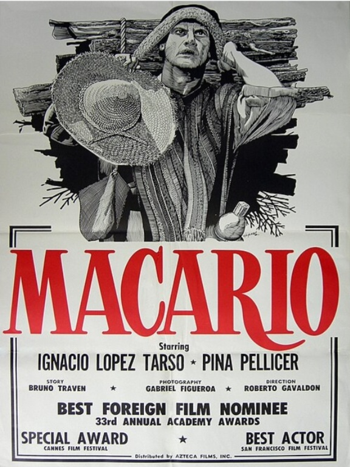

Macario (1960)
Película dirigida por Roberto Gavaldón basada en la novela de B. Traven. Es considerada una de las obras más importantes del cine mexicano.

Nosotros los Pobres (1948)
Película protagonizada por Pedro Infante. Es una de las cintas más representativas de la Época de Oro del Cine Mexicano.

Ahí está el Detalle (1940)
Comedia protagonizada por Cantinflas. Es una de las películas más famosas de la historia del cine mexicano.